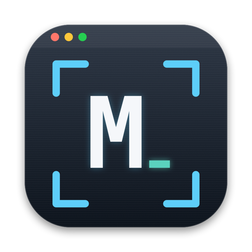
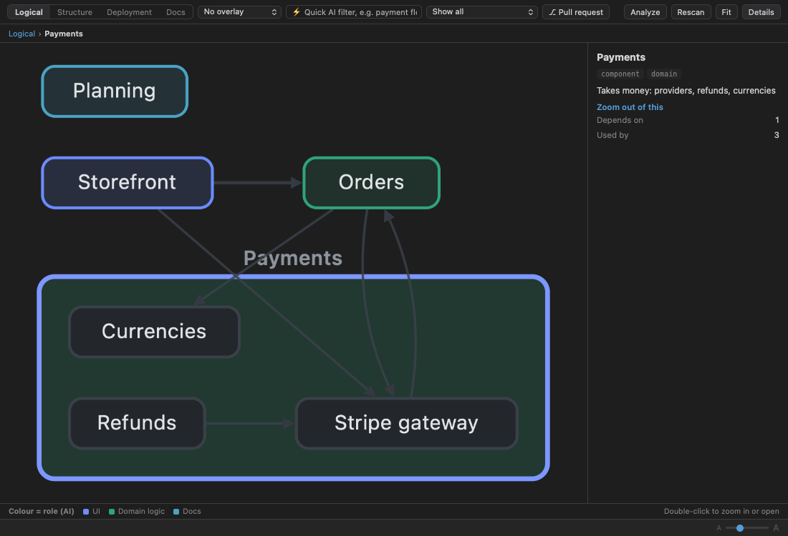
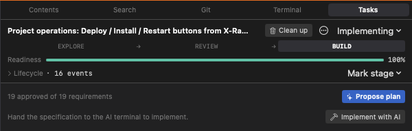
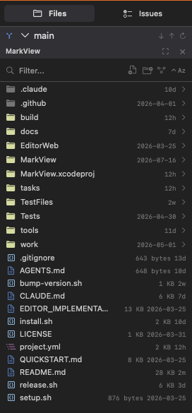
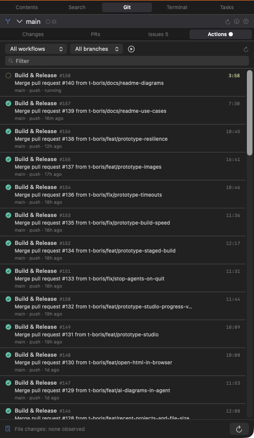

Understand any project, then build it with AI.
A native macOS workspace for code and documentation: from idea to merged code.

The problem
New people, and your own agents, open a repository and meet thousands of files with no map.
Decisions get lost between a ticket, a conversation and a pull request. The code drifts away from the docs.
Claude Code, Codex and others are powerful, but a chat window is not where you understand, specify, review and ship.
MarkView puts the map, the specification, the prototype and the agent in one window, on top of your own files.
What MarkView is
It starts as a plain Markdown reader and grows with you. Each step stands on its own: use only what you need.
Everything is a plain file in your repository (Markdown with YAML front matter). No server, no account, no lock-in.
Step 1 · Read and write
Open one Markdown file or a whole folder. No project, AI or account required.
Mermaid diagrams, KaTeX math, task lists, footnotes, front matter and [[wikilinks]]. Export to PDF, or build a whole PDF book.
CodeMirror 6 with syntax highlighting; press Edit to change it in place. Image, JSON Canvas, XML, plist and archive viewers.
CSV, Parquet, Arrow, Avro, SQLite, Excel, HAR. Sort, filter, column statistics, and real SQL in the page.
Double-click a value in the tree. YAML keeps its comments, JSON keeps its indentation.
Levels with counts, stack traces, regex search, Next error, and Follow for a growing log.
File names and file contents, plus commands, in one palette: ⌘⇧K. Find in file with case and regex.
Step 2 · Understand
Step 2 · Understand
Type a question in the ⚡ box. The answer comes as What, Why, How and Origin, with clickable evidence from code, documents, commits and pull requests. The relevant boxes light up.
Open a source folder and press ⌘4: a layered map appears and sharpens in the background. Sequence diagrams trace a scenario, with clickable path:line evidence.
A folder of documents becomes parts, chapters and sections you can ask. Margin notes explain code and Markdown section by section.
See where a pull request lands in the architecture: a verdict, impact, findings you can fix with one click, chat, approve or merge. Works on a local branch too.
Step 3 · Specify
Rounds of at most three questions, each with concrete options and a recommended answer. The AI reads your code first, so it never asks what the project already answers.
The whole spec is read from a dozen perspectives. Every resolution is written back into the requirements, so the next review never raises a settled point again.
Propose a plan, create issues and an epic on GitHub, then Implement with AI: a binding handoff to the agent in the terminal.

Requirements, decisions, questions and findings are plain Markdown under docs/features/<slug>/: readable, diffable, reviewable in a pull request.
Step 3 · Check
Twelve perspectives, from Product and UX to Security, QA and Privacy, with severity and quotes.
Finds statements the code no longer backs. The documentation overlay flags docs older than the code they describe.
Bugs, edge cases, leftovers and missing tests with file:line. Observed file changes show agent edits side by side.
Reviewed in its architecture context, with the diff, findings, impact and merge.
A security review prompt, plus Codebase Audit and Constructive Critic reports.
Click through it, point at what to change, approve when it is right.
Review prompts never modify files: they report, and you decide.
Step 4 · Prototype
SPEC.md, CHANGES.md and a README: an implementer, human or AI, builds from it.Step 4 · Prototype
The app's own stylesheets, fonts and images are copied as they are. A theme picker switches the app's themes.
A From code badge, plus Assumptions & gaps that say what was not reproduced.
A chip tells whether the prototype matches the code. Sync from code keeps the previous version.
An editable brief goes to an agent that makes a branch and a pull request. The studio never writes to your source.
Step 5 · Build
Claude Code, Codex, Cline, GitHub Copilot and Antigravity run in real terminals next to your files. They use your own sign-in: MarkView needs no provider key.
Sign in once, name the tab "Jira", say "in tab Jira, follow these steps". No password is ever shared. Stop takes the tab back.
"Turn this prototype into features." The app writes the files in its own exact format, so ids and links stay valid.
Review changes, Docs ↔ code, Find bugs, Write tests, Security review, Commit message, and more.
Step 6 · Ship and run
Deployments (⌃⌘D) shows each place the project runs as one picture.
Reads workflows, platform files, deploy scripts, docs and ~/.ssh/config: servers, Firebase, Vercel, Fly.io, Kubernetes, AWS, Google Cloud, and the databases behind them.
CPU, memory, disks, services and containers, your own green and red checks, logs, and one health badge. Ask the AI: "Why is it slow?"
Tables, sizes, indexes and a SQL box on PostgreSQL. Reads run in a read-only transaction. The password never appears in a command line.
Step 6 · Ship


Under the hood
.dde/ folder.See it live
⌘⇧O A file tree, git status and project search in ⌘⇧K.
⌘4 Layers fill in. Click a scenario for a sequence diagram with source links.
Type in the ⚡ box: "How is a document saved?" Get a cited answer and the boxes light up.
Open a CSV or Parquet file, click SQL, run a query with ⌘↵.
⌘3 Start Claude Code, then press Review changes.
AI Tools → Prototype → New Prototype from Code… Then watch the build.
Bonus: ⌃⌘D for Deployments, ⌘6 to preview a web app, ⌘⇧E to export a PDF book.
Get MarkView
Download the signed, notarized installer, drag it to Applications, and open any folder.
github.com/t-boris/MarkView/releases/latest
git, and gh for GitHub